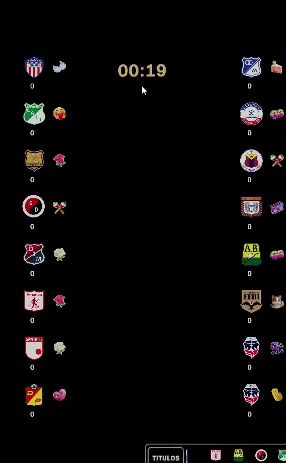
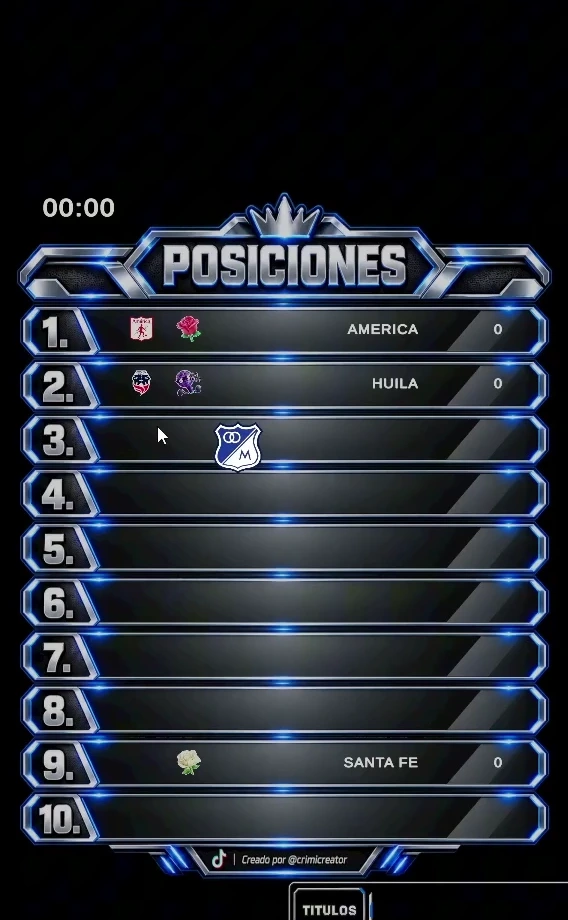
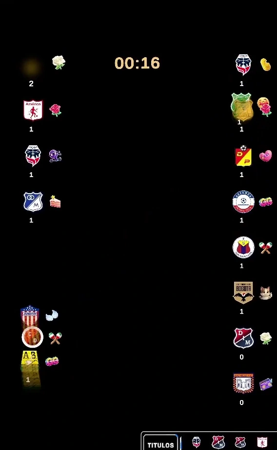
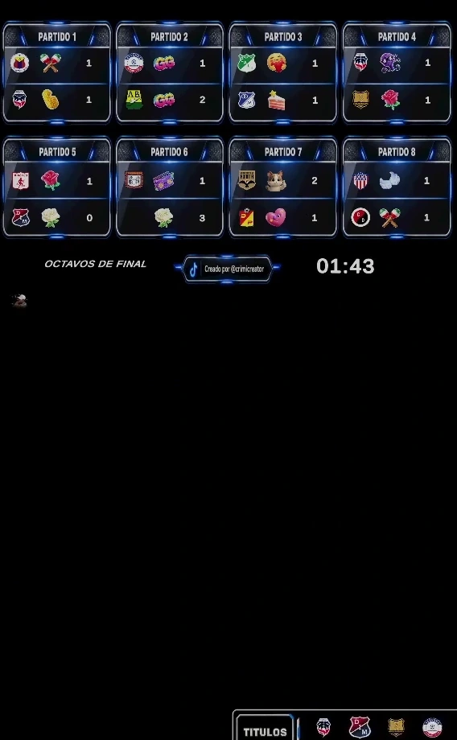

F1Puntos
Rey por Puntos
Competencia directa por puntos. Configura el tiempo y comienza la partida.
Ver tutorial ›Convierte tus transmisiones en una competencia interactiva. Elige equipos, configura regalos y juega con tu comunidad en OBS o TikTok LIVE Studio.
Puntos, tabla, supervivencia y llaves.
Aprende a instalar y preparar tu LIVE.
Descubre el nuevo catálogo de regalos.

F1Competencia directa por puntos. Configura el tiempo y comienza la partida.
Ver tutorial ›
F2Clasificación dinámica por apoyo. Configura el tiempo y comienza la partida.
Ver tutorial ›
F3El último equipo va quedando eliminado. Cada ronda comienza desde el cronómetro.
Ver tutorial ›
F5Sortea los enfrentamientos y juega todos los cruces a la vez o uno por uno.
Ver tutorial ›Aprende desde la instalación hasta la configuración de tu partida. Algunos videos muestran interfaces de versiones anteriores.
No hay tutoriales que coincidan.
Una interfaz optimizada para preparar y controlar tus partidas.
Nombres, iconos, IDs y filtros por coins. Más de 780 regalos detectados en las pruebas.
Elige directamente un regalo para cada uno de los 16 equipos.
Corrección de duplicación de puntos y mejoras de conexión.
Contacta con CRIMI CREATOR S.A.S. para resolver dudas de instalación, licencia o configuración.
Contactar por WhatsApp ↗Un equipo Windows de 64 bits, acceso a Internet y espacio para la instalación. Descarga el instalador desde esta web.
No. El instalador actual es único y permite usar GOLUP con ambos programas.
El instalador puede activar SmartScreen porque no tiene firma de código de Windows. Verifica la procedencia oficial y el SHA256 antes de ejecutarlo.
Abre el juego y comprueba la actualización integrada. No necesitas descargar el instalador completo cada vez.